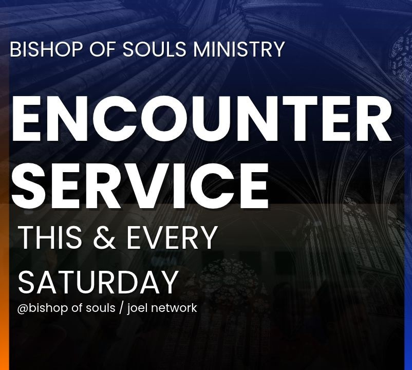
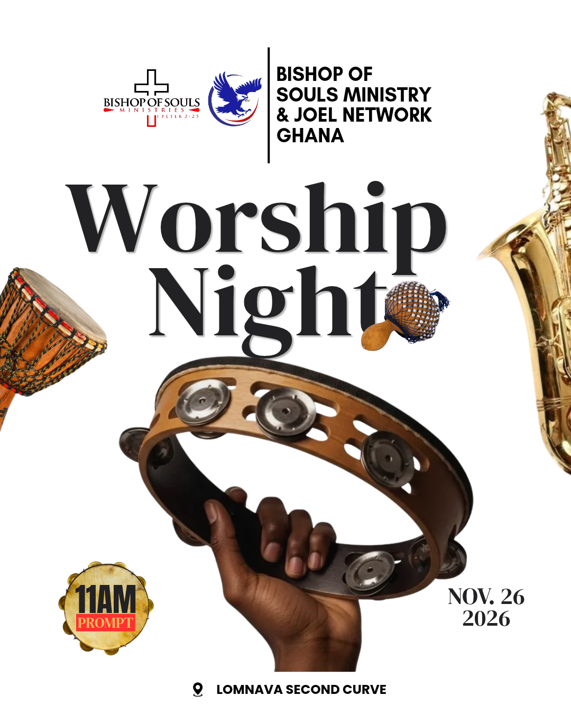
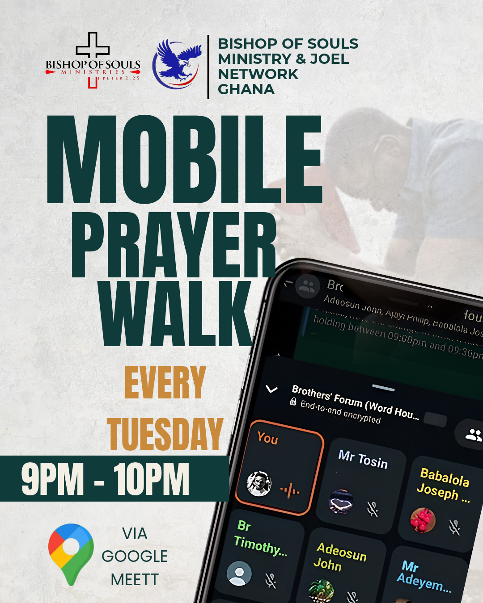
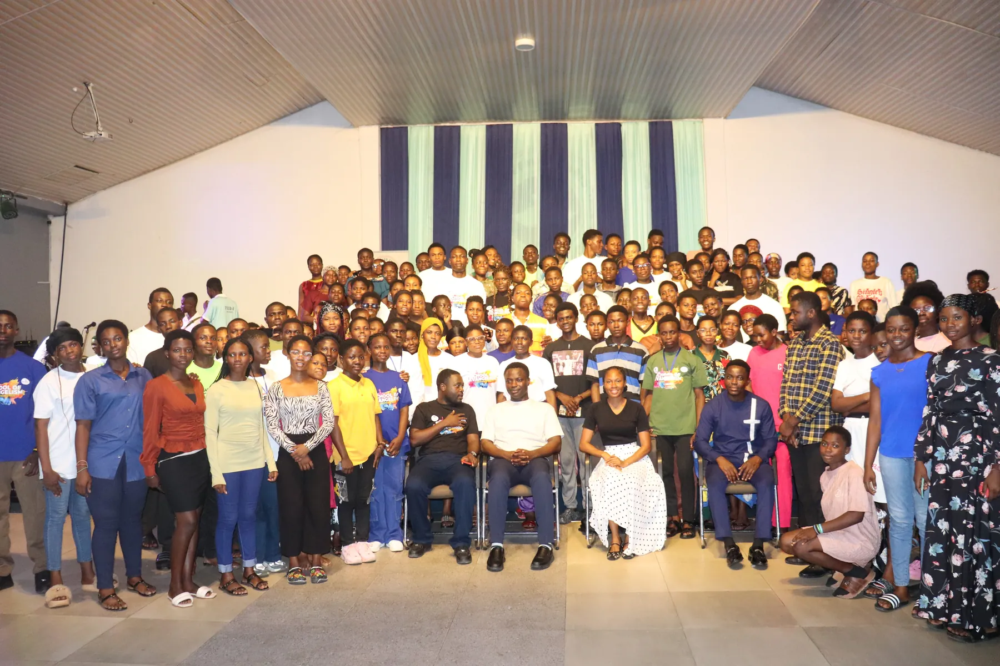
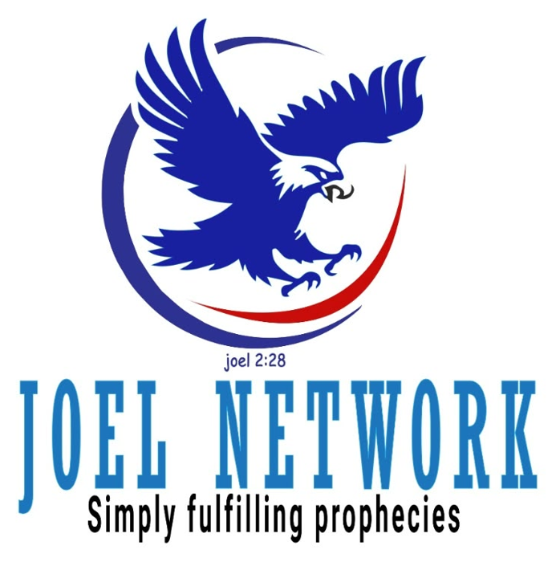
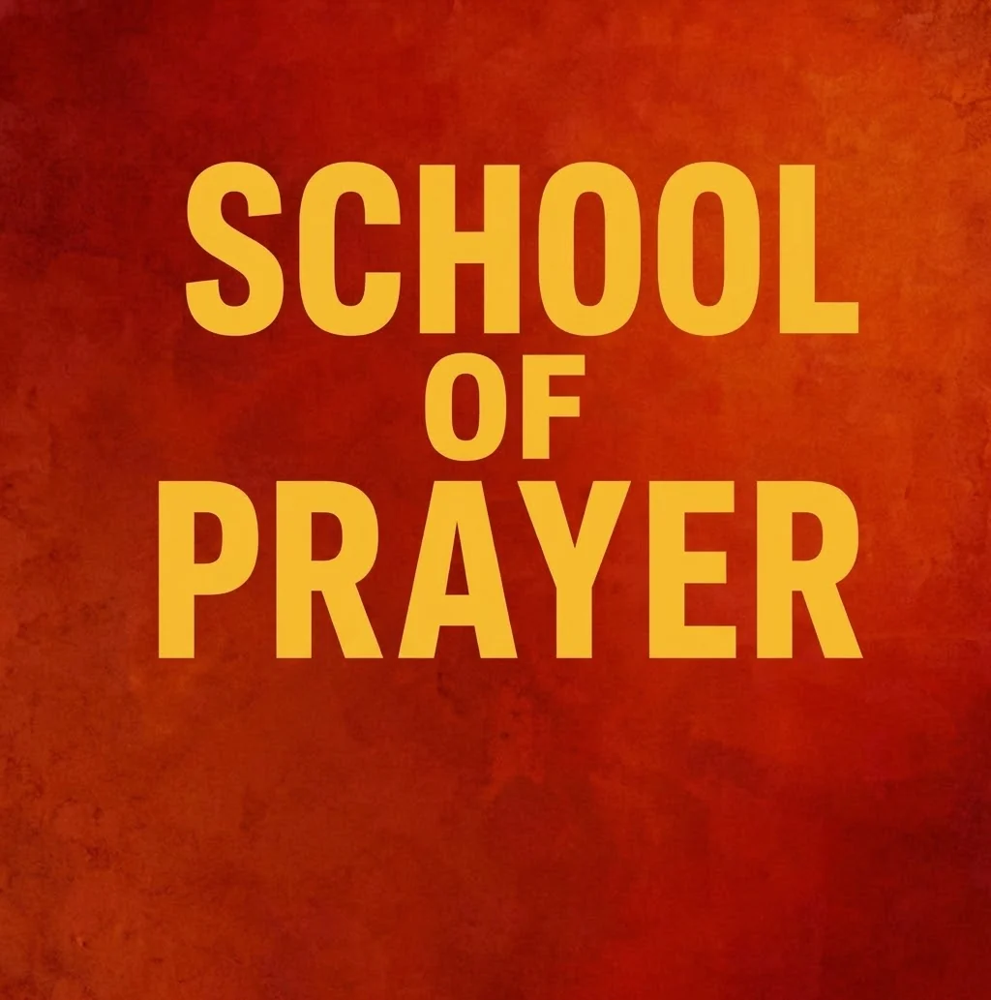
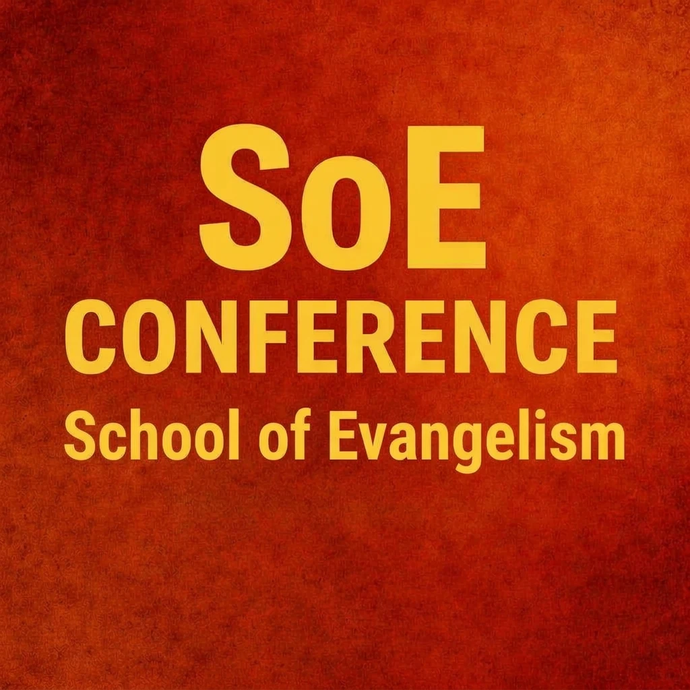

SATURDAY

Saturday Encounter Service
🕒 6:00 PM – 9:00 PM
Spiritual encounters, worship, prayer, the teaching of God’s Word and spiritual growth.
Committed to evangelism, prayer, discipleship, worship and missions, taking the Gospel to schools, campuses and communities across Ghana and beyond. Home of Joel Network Ministry.
“For ye were as sheep going astray; but are now returned unto the Shepherd and Bishop of your souls.”
1 Peter 2:25 (KJV)
All times are Ghana time.

🕒 6:00 PM – 9:00 PM
Spiritual encounters, worship, prayer, the teaching of God’s Word and spiritual growth.

🕒 6:00 PM – 8:30 PM
Music rehearsals, worship and musical ministration.

🕒 9:00 PM – 10:00 PM Ghana · 10:00 PM – 11:00 PM UK
Corporate prayer, intercession and spiritual engagement.

Through our departments, weekly programmes, annual missions and conferences, Bishop of Souls Ministry seeks to equip people to grow in Christ and carry the Gospel to their communities and beyond.
Our work reaches from weekly worship and prayer in Accra to mission trips across the Eastern, Volta, Central and Northern regions of Ghana, and to students in basic schools, senior high schools and universities through Joel Network Ministry.
Outreaches, soul-winning, community evangelism and mission trips that take the Gospel to people where they are.
Prayer meetings, intercession and fasting programmes, including our weekly Tuesday Mobile Prayer Walk.
Bible teaching, mentorship and spiritual development that help believers grow and stay grounded in Christ.
Music, drama and dance ministry that express worship and communicate biblical truth creatively.
Annual mission trips to remote and underserved communities across Ghana.
Joel Network reaches pupils, senior high school students and university campuses with the Gospel.
Joel Network ministers in basic and senior high schools, where hundreds of students pray, worship and hear the Word together.
Be encouraged and built up in the Word. Select a message to watch it right here.
“Simply Fulfilling Prophecies.”
Joel Network is dedicated to reaching, nurturing and discipling students through school evangelism, Christian mentorship, spiritual development and campus ministry, from basic school through senior high school and into university.
Campus fellowships: UCC · UEW · UHAS · ATU · HTU · UG


Dedicated to developing believers in prayer, intercession and spiritual discipline.
Biblical foundations for prayer, strengthened personal devotion, corporate prayer, teaching and fellowship, so that prayer becomes a way of life.
A camp for Senior High School graduates who want to grow in Christ and in evangelism.

Three to five days of Bible study, prayer, mentorship and fellowship. The ministry supports participants’ feeding, transportation and accommodation.
Glimpses of worship, prayer and teaching from our conferences and school outreaches.
Our team would love to hear from you. Send a message, call, or chat with us on WhatsApp.